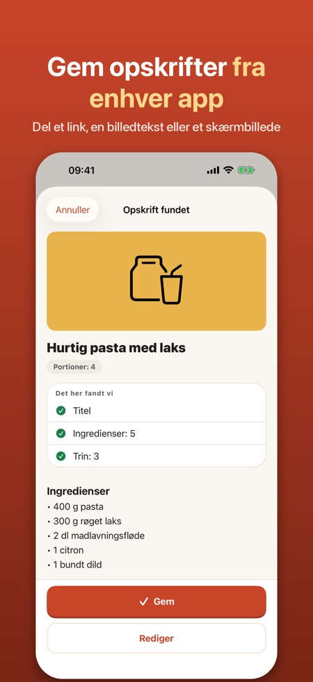
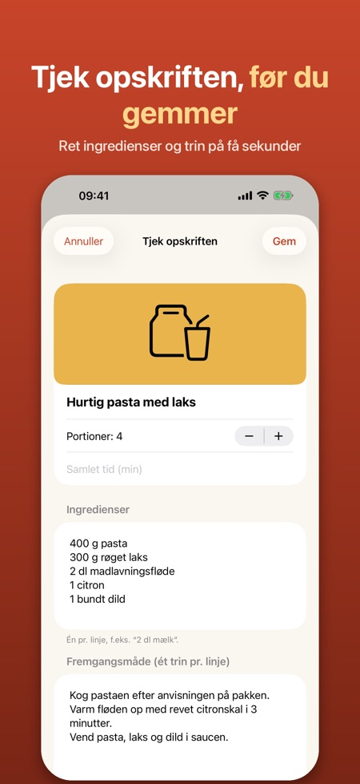
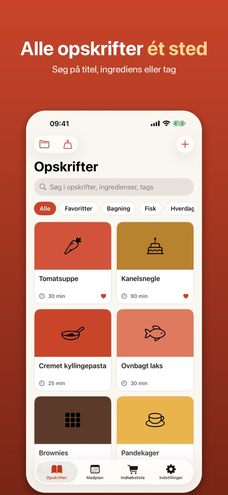

Ugeplan og indkøbsliste. Del en opskrift fra en app eller hjemmeside, og få et overskueligt opskriftskort med ingredienser, trin og tid. Skalér portioner, lav mad trin for trin og planlæg ugen.



Har du set en opskrift i en app eller på en hjemmeside? Del den til appen, så bliver den til et overskueligt opskriftskort, du kan lave mad efter.
SÅDAN GEMMER DU
• Tryk Del i Safari, Instagram, TikTok eller en anden app, og vælg Opskrifter
• Links til opskriftssider læses automatisk: titel, ingredienser, trin, tid, portioner og billede
• Fra sociale medier bruges den tekst, du deler eller indsætter, eller et skærmbillede (Pro)
• Du ser altid opskriften, før den gemmes, og kan rette alt
LAV MAD
• Madlavningstilstand med stor tekst, ét trin ad gangen, og skærmen forbliver tændt
• Timere findes i teksten (»lad det simre i 15 minutter«) og startes med ét tryk
• Skalér portioner op og ned
• Omregn cups og ounces til dl og gram, og tbsp/tsp til spsk/tsk
PLANLÆG OG HANDL
• Indkøbsliste: vælg ingredienser, og ens varer lægges sammen (2 dl + 1 dl mælk = 3 dl)
• Del listen eller eksportér den til Påmindelser
• Ugens madplan: træk opskrifter til dagene og føj hele ugen til indkøbslisten (Pro)
DIN SAMLING
• Søg i titler, ingredienser og tags
• Favoritter, tags og samlinger (samlinger med Pro)
• Kildelinket gemmes, så du altid kan se, hvor opskriften kommer fra
FORSTÅR NORDISKE OPSKRIFTER
Appen læser opskrifter på dansk, norsk, svensk, finsk og engelsk og kender mål som dl, spsk, tsk, ss, ts, msk, krm, rkl og tl.
PRO
Uden Pro kan du gemme op til 15 opskrifter og bruge madlavningstilstand og indkøbsliste. Pro giver ubegrænset antal opskrifter, læsning af skærmbilleder, smart import (på enheder med Apple Intelligence), madplan og samlinger. Vælg et årsabonnement eller et engangskøb. Abonnementet fornyes automatisk, medmindre det opsiges senest 24 timer før periodens udløb, og kan opsiges i Indstillinger under dit navn > Abonnementer.
PRIVATLIV
Ingen konto og ingen reklamer. Dine opskrifter bliver på din telefon. Appen logger aldrig ind på sociale medier og henter kun det, du selv deler.
Appen er uafhængig og ikke tilknyttet Instagram, TikTok, Meta eller andre nævnte tjenester. Varemærker tilhører deres ejere.